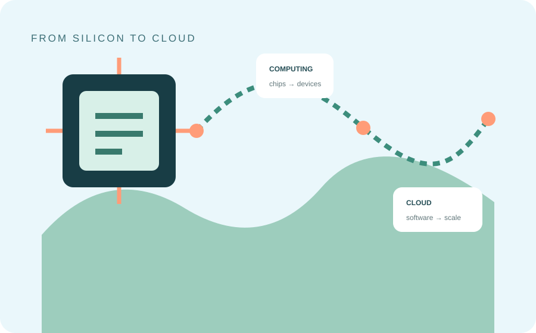
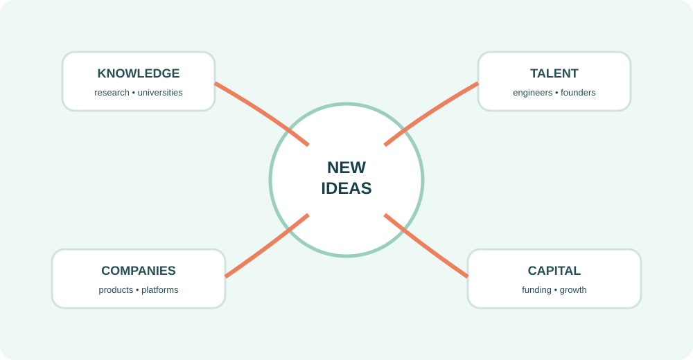

01
⌁
Research
Universities and research institutions helped create a pipeline of technical knowledge, engineers and new ideas.
A VISUAL FIELD GUIDE • NORTHERN CALIFORNIA
Silicon Valley became a shorthand for technological innovation. But the story starts much earlier than today's apps and AI: with semiconductors, universities, engineers, entrepreneurs and a culture built around experimentation.
Silicon Valley refers broadly to the technology-centered region of Northern California around Santa Clara Valley and the southern San Francisco Bay Area. Its reputation grew from a concentration of semiconductor companies and research, then expanded into personal computing, software, internet companies and many newer technology fields.
The name itself became widely known after electronics journalist Don Hoefler used “Silicon Valley U.S.A.” as the headline of a 1971 Electronic News series about the region's semiconductor industry.

ONE REGION, MANY TECHNOLOGY ERAS02 • WHY SILICON VALLEY?
There was no single invention that created the region's reputation. Its technology ecosystem developed through overlapping institutions, companies, talent and capital.
Universities and research institutions helped create a pipeline of technical knowledge, engineers and new ideas.
Silicon-based semiconductor technology gave the region its defining early identity and helped establish a durable electronics industry.
New companies repeatedly formed around emerging technologies, creating a cycle of experimentation and product building.
Venture investment became an important mechanism for funding high-risk companies that aimed to grow quickly.

03 • A QUICK HISTORY
The Valley's identity changed as the dominant technology of the moment changed.
Semiconductor research and companies establish the region's technology identity.
Microprocessors and personal computers reshape what computing can mean for individuals.
Web companies and online services transform communication, commerce and media.

Cloud computing, AI, advanced hardware and other fields continue changing the technology landscape.
04 • THE REGION TODAY
Silicon Valley's influence now reaches far beyond semiconductors. Software, cloud infrastructure, consumer technology, enterprise tools, biotechnology, robotics and artificial intelligence all connect to the wider Bay Area technology economy.
05 • ONE IMPORTANT DISTINCTION
It is a regional ecosystem and a cultural label. Many different organizations, universities, investors, engineers and founders contribute to the area's technology activity. The companies associated with Silicon Valley have also changed dramatically over time.
READING NOTES
END OF FIELD GUIDE